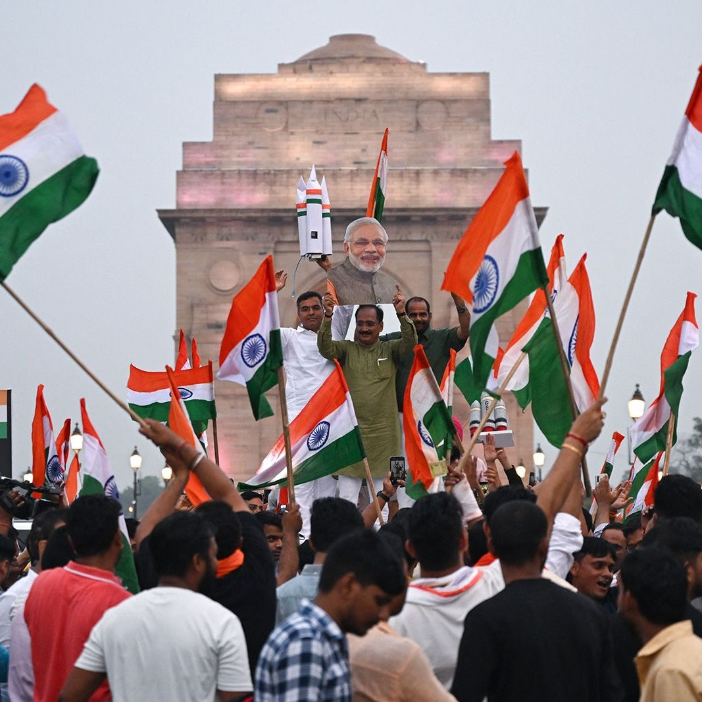
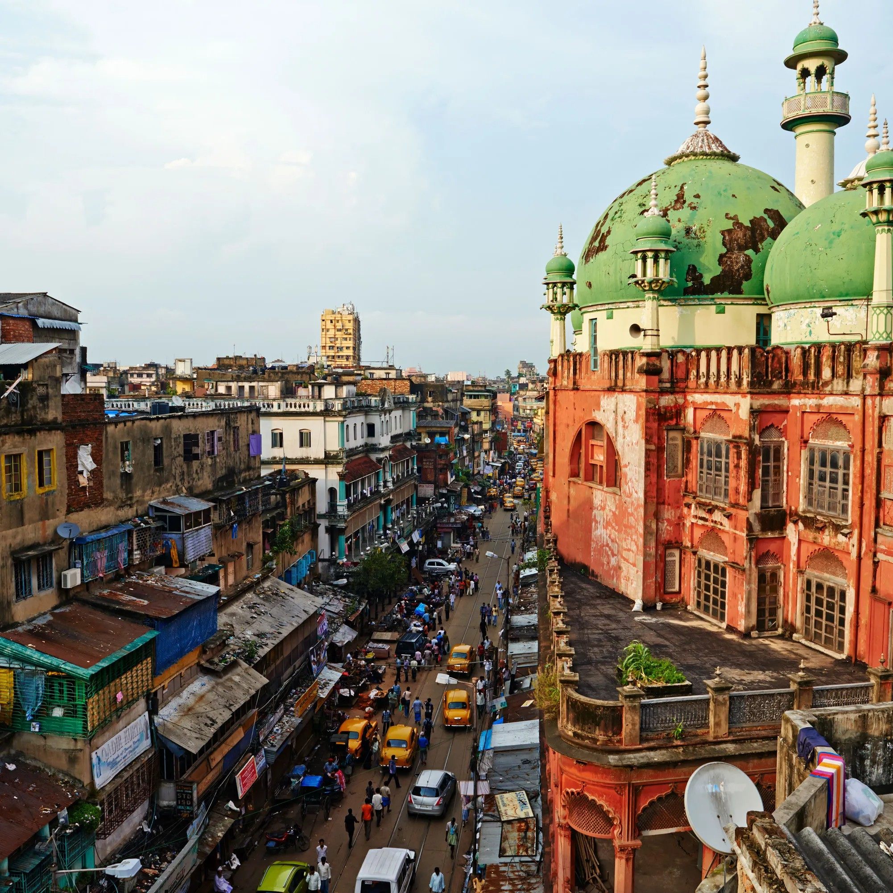

India
From the Taj Mahal's Eternal Beauty to Kerala's Backwater Serenity
My Indian odyssey began in Delhi, the bustling capital city where ancient traditions coexist with modernity. The grandeur of the Red Fort and the serene beauty of the Lotus Temple provided a stark contrast, showcasing India's multifaceted charm. The vibrant street markets of Old Delhi and the tantalizing street food stalls offered a sensory feast.
 No visit to India is complete without witnessing the eternal beauty of the Taj Mahal in Agra. At sunrise, I marveled at the ivory-white marble masterpiece, its exquisite architecture and intricate carvings bathed in the soft morning light. The sheer scale of the monument and the love story behind its creation left me in awe.
Traveling to Jaipur, the Pink City, I explored the magnificent Amber Fort. The ornate palaces, intricate frescoes, and the sweeping views from the hilltop fort offered a glimpse into the opulence of Rajasthan's royal history. A visit to the City Palace and the iconic Hawa Mahal revealed the regal grandeur that defines Jaipur.
Varanasi, the spiritual heart of India, beckoned with its timeless rituals along the sacred Ganges River. At sunrise, I witnessed the mesmerizing Ganga Aarti, a spiritual ceremony where priests offered prayers to the river. A boat ride along the Ganges allowed me to observe the life and devotion of the pilgrims who visit this ancient city.
 My journey continued to Kerala, where I embarked on a houseboat adventure through the tranquil backwaters. Surrounded by lush greenery and serene waters, I soaked in the peaceful ambiance and savored traditional Kerala cuisine prepared by the boat's crew. The experience offered a glimpse into Kerala's harmonious relationship with nature.
Heading north to Rishikesh, the Yoga Capital of the World, I delved into the practice of yoga and meditation. A visit to the Parmarth Niketan Ashram allowed me to participate in evening Ganga Aarti, a serene and spiritual experience by the banks of the Ganges. The serene Himalayan landscapes and the aura of spirituality in Rishikesh were rejuvenating.
My journey concluded in Mumbai, where I explored the city's glitz and glamour. Visiting the Gateway of India and Marine Drive, I admired the city's iconic landmarks. Exploring the historic Chhatrapati Shivaji Terminus and strolling through the bustling markets of Colaba, I experienced the vibrant energy of Mumbai.
As I reflect on my journey across India, I am enchanted by the country's timeless charms. From the Taj Mahal's eternal beauty to Jaipur's regal grandeur, Varanasi's spiritual enlightenment to the Kerala backwaters' tranquility, Rishikesh's yogic serenity to Mumbai's glitz and glamour, India's diversity is its greatest treasure.
Join me in my future travels as I continue to explore the captivating regions of Asia and Oceania, each offering its own unique blend of beauty and cultural richness. Until next time, keep your wanderlust alive and your heart open to the wonders of the world. नमस्ते!